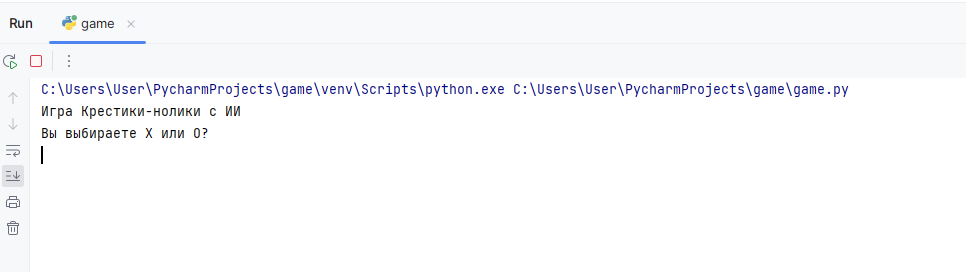
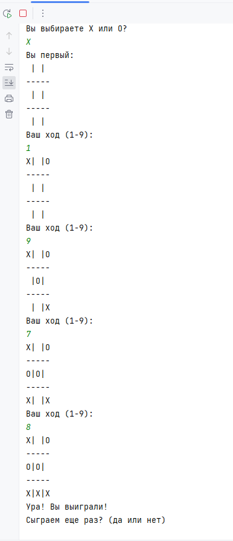

Описание
Мой проект на Python под названием крестики нолики с ии. На картинке можно увидеть как выгледит начало игры. Первое на экран показывается название игры и сразу же за ним выбор хода
После чего начинается игра. Кто ходит первый определяется рандомно. Дальше идёт сам процесс игры в конце которого может быть три итога (Победа(игрока), Ничья, Проигрыш). После чего игроку предлагаеться сыграть сново